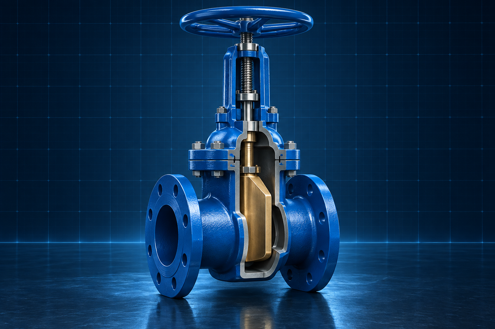
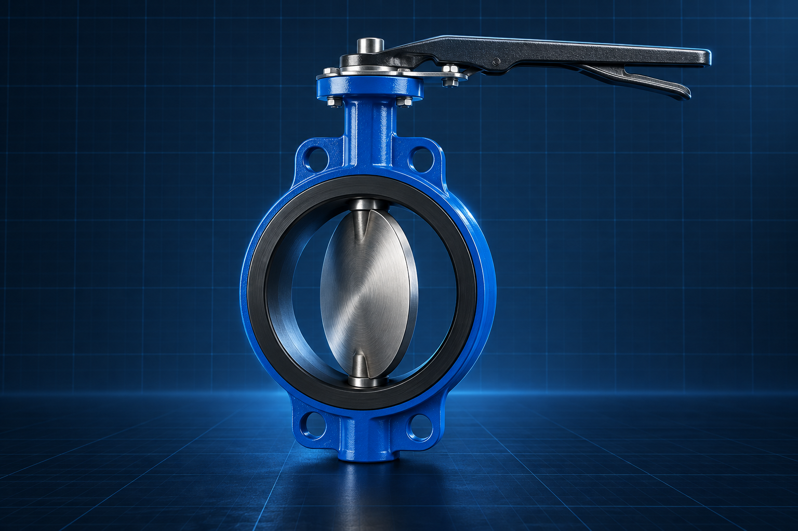
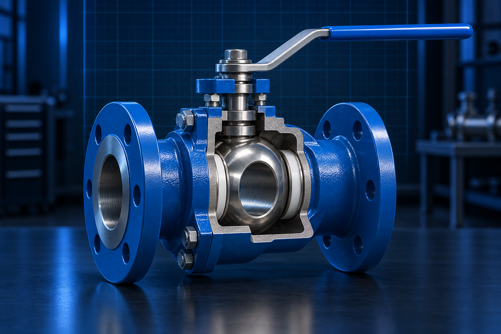
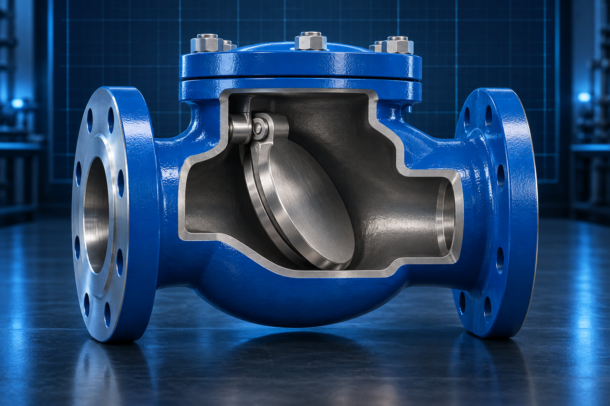
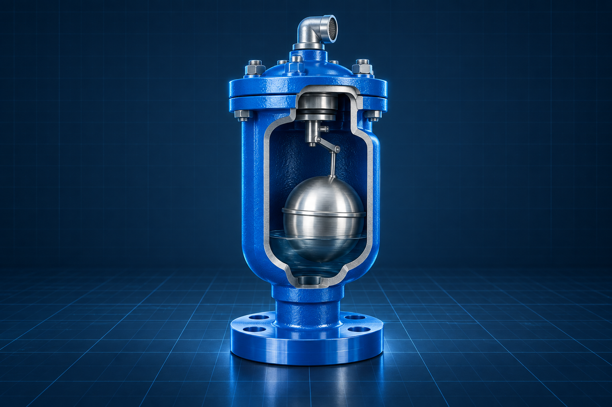

Válvulas
1. Válvula de Compuerta
Apertura y cierre del paso de fluido mediante una compuerta deslizante.
3D próximamenteModelos tridimensionales para el aprendizaje de la Mecánica de los Fluidos.

Apertura y cierre del paso de fluido mediante una compuerta deslizante.
3D próximamente
Control del paso de fluido mediante el giro de un disco central.
3D próximamente
Cierre de un cuarto de vuelta mediante una esfera perforada.
3D próximamente
Paso del fluido en un solo sentido para evitar el flujo inverso.
3D próximamente
Liberación del aire acumulado en los sistemas de tuberías.
3D próximamenteImpulsión del fluido mediante la rotación de un rodete.
Abrir modelo 3D